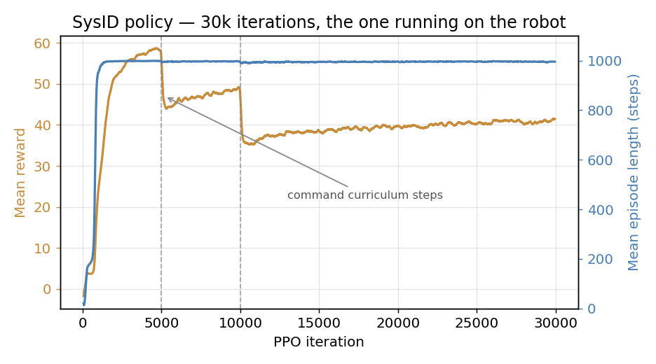
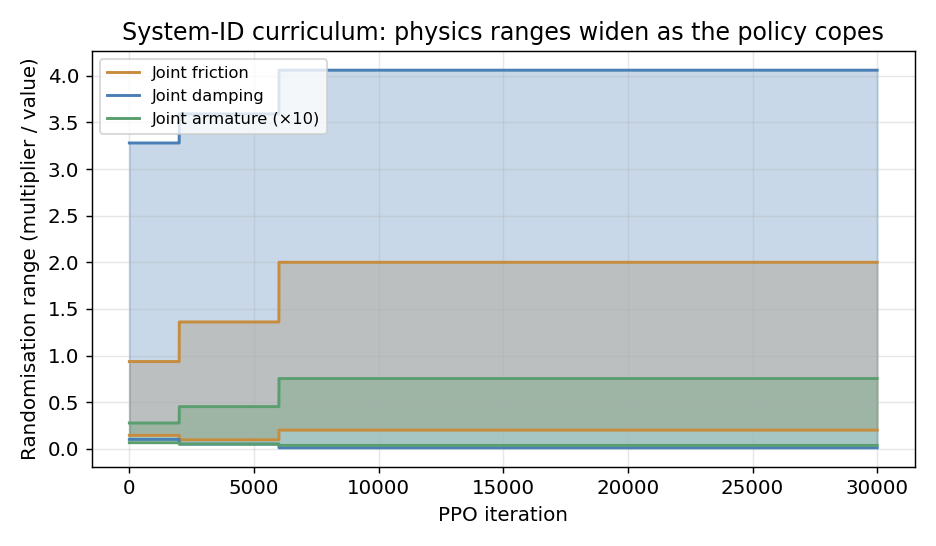
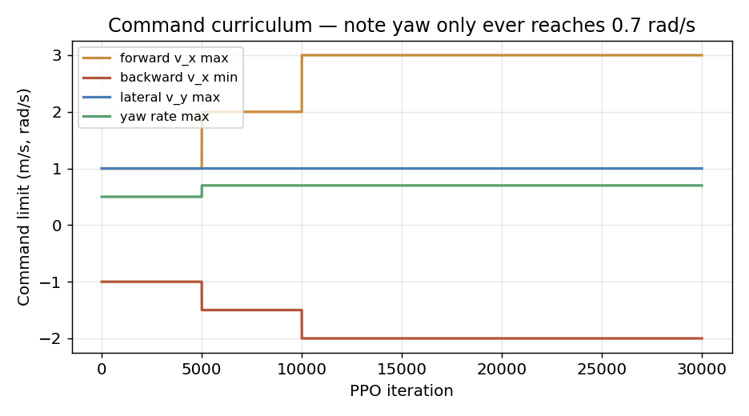

← All projectsUnitree G1 · RL Locomotion from Simulation onto the Real Robot
In Progress · Reinforcement Learning & Sim-to-Real
Unitree G1 · RL Locomotion from Simulation onto the Real Robot
Personal research project · mjlab / MuJoCo Warp · PPO + system-ID randomisation · deployed over CycloneDDS
Sep 2026 – ongoing
In progress
Working today: a velocity policy trained under a system-identification randomisation
curriculum, exported to ONNX and running on the physical 29-DoF Unitree G1 at 50 Hz over
CycloneDDS — remote-stick teleop, keyboard teleop and scripted distance sequences all driving the
real machine. Being built now: RGB-D mapping from the robot's D435i head camera through
RTAB-Map, and a retrain to fix the deadband and turn-in-place limits measured on hardware.
Every number below is from my own run or my own robot.
A humanoid locomotion policy is not one problem, it is two stacked. The low level has to keep a
29-DoF biped upright while tracking a commanded body-frame twist. The level above has to decide what
that twist should be. Most published work stops at the first, ships a policy that takes
(vx, vy, ωz), and leaves the robot with no way to be told
"go over there" — and, more often than not, never leaves simulation at all.
I trained the policy in mjlab, a MuJoCo-Warp RL framework, through 30 000 PPO
iterations on one 8 GB laptop GPU. The version that matters is the second one: trained under a
system-identification curriculum that randomises joint friction, damping, armature,
actuator effort limits and PD gains, and widens those ranges as the policy proves it can
cope. That is what makes the transfer survive — a policy tuned to MuJoCo's exact joint model has
nothing to fall back on when the real gearbox behaves differently.
It then goes onto the robot: ONNX export carrying its own gains and default pose as metadata, a
50 Hz control loop over CycloneDDS to the G1's low-level interface, and a tilt watchdog that drops to
damping if the pelvis goes past ~53°. The interesting part is not that it walks — it is the
list of things it does worse on hardware than in simulation, which is measured and written
down below rather than left out.
real Unitree G1 driven at 50 Hz from a 96-dim observation, policy in ONNX
995 / 1000
mean episode length under randomised physics — 0.04 fall terminations
2.1×
widening of the joint-friction randomisation band over the curriculum
±0.3 m
open-loop distance accuracy on a scripted 2 m / 1 m / 0.5 m sequence
Simulation. The scripted distance sequence in mjlab — 2 m forward, 1 m back,
0.5 m right, 0.5 m left, 1 m back, with two-second holds between moves. The blue arrow is the
commanded twist, the magenta markers are foot contacts. This is the run the move durations were
calibrated from.Real robot. The same ONNX policy and the same schedule, executed on the physical
G1 over CycloneDDS. Timings are open loop — there is no position feedback, so the distances come
from durations measured in the run on the left.
[Placeholder: currently showing the simulation clip until the hardware footage is recorded.]
Training the Policy That Actually Deployed
Deliberately one consumer GPU. If a humanoid policy needs a cluster to reproduce, most people cannot check your work.
Robot & Task
Unitree G1, 29 actuated DoF. mjlab task Velocity-Flat-Unitree-G1-SysID: track a commanded body-frame twist on flat ground while the simulator's physical parameters are resampled every episode.
Observation & Action
96-dim: gyro (3) + projected gravity (3) + joint position error (29) + joint velocity (29) + previous action (29) + command (3). Action is 29 joint targets, applied as q = qdefault + scale · a. No height, no velocity estimate, nothing the real robot cannot measure.
System-ID Randomisation
Per-episode resampling of joint friction, damping and armature, actuator effort limits, and PD gains across six actuator groups — with the ranges themselves on a curriculum that widens them as the policy holds up.
Command Curriculum
Command ranges widen as tracking error stays in tolerance: vx [−1, 1] → [−2, 3] m/s, yaw rate 0.5 → 0.7 rad/s. That yaw ceiling turns out to matter a great deal — see the limits below.
Run
30 000 iterations, ~37 800 simulation steps/s. Mean reward −1.26 → 41.9; mean episode length 12.9 → 994.8 steps against a 1000-step cap; fall terminations 0.04.
Export
ONNX, with joint names, stiffness, damping, default pose and action scale written into the model metadata — so the deployment script reads its gains off the policy instead of keeping a second copy that can drift out of sync.

Reward and episode length — the drops are command-curriculum steps

Physics randomisation bands widening as the policy copes

Command limits — yaw never trained past 0.7 rad/s
Getting It Onto the Robot
The gap between a trained checkpoint and a walking machine is mostly plumbing, and the plumbing is where it goes wrong.
Link
Laptop to robot over Ethernet, Unitree SDK2 on CycloneDDS. Robot enters debug mode from zero-torque, hung on a gantry for every first run of a new policy.
Control Loop
50 Hz (2 ms sim step × 4 decimation). Read low state → assemble the 96-dim observation → ONNX Runtime on CPU → 29 position targets with the policy's own kp/kd → publish with CRC.
Two Python Environments
mjlab runs on Python 3.13; CycloneDDS 0.10 will not build there. The robot side is a separate 3.10 venv with unitree_sdk2py, onnxruntime and pynput. ONNX is what lets those two worlds share a policy without sharing an interpreter.
Safety
A --dry-run mode that reads sensors and runs the policy but publishes nothing; START moves smoothly to the default pose over 3 s before anything else; a tilt watchdog drops to damping if projected gravity says the pelvis is past ~53°; SELECT and Ctrl+C both land in damping.
Three Ways to Drive It
Remote-stick teleop, laptop keyboard hold-to-move (X11 global key capture, so it works from any window), and scripted timed sequences for repeatable demos and for filming.
Sim Recorder
The same schedule file drives both the robot and a headless mjlab recording, parsed out of the script rather than duplicated — so the simulation video and the hardware run are provably the same command sequence.
What the Hardware Says the Policy Cannot Do
Measured in simulation and confirmed on the robot. These are the reasons the next training run exists.
Command
Behaviour
Diagnosis
Forward ≤ 0.3 m/s
Stands still, does not step
deadband — no reward for stepping slowly
Forward ≥ 0.45 m/s
Walks reliably
commanded 0.6 → ~0.5 m/s actual
Sideways < 0.55 m/s
Does not step
same deadband, wider
Turn in place
◆ Unreliable
trained yaw only reached ±0.5 rad/s
Turn while walking
Reliable both directions
inside the trained distribution
The turn-in-place failure is the instructive one. Commanding ωz = 1.0–1.2 rad/s sometimes
works and sometimes does not — on the robot it turned right, then refused to turn left. That is not
flakiness, it is extrapolation: the command curriculum never took yaw past
0.7 rad/s, so every in-place turn asks the policy for something outside the distribution it was
trained on, and whether it complies depends on the pose it happens to be in. The teleop scripts cap
yaw at 1.2 rad/s precisely because pushing further is not more reliable, just faster when it works.
The fix is in training, not in the controller: give the foot air-time reward a
positive weight and drop its command threshold from 0.5 to ~0.1 so slow stepping pays, and add
command environments with zero linear velocity and non-zero yaw so turning in place is something the
policy has actually seen. Tuning the deadband out at the teleop layer would only hide it.
What Transferring It Taught Me
The things that were not obvious until the policy was on a real machine.
01Randomising the physics is not enough — the range has to be on a curriculum too.
Opening joint friction, damping and armature to their final width from step zero gives a policy
that never learns to walk at all, because no consistent gait works across the whole band. Starting
narrow and widening as episodes survive means the policy learns a gait first and then learns to
make it robust. Friction ended 2.1× wider than it began, and torque authority was pulled down to
80% of nominal.
02Put the gains inside the exported model. kp, kd, the default pose and the action scale are
written into the ONNX metadata and read back at deploy time. The alternative — a constants block
in the deployment script — is a second source of truth for numbers that must match the training
environment exactly, and it will drift the first time a policy is retrained.
03The observation was designed backwards from the robot. Gyro, projected gravity, joint
positions and velocities, and the previous action — all of it is available from one low-state
packet. No base linear velocity, no height above ground, no privileged state. A policy that
consumes anything else is a policy that needs a state estimator before it can be deployed at all.
04Drive both the robot and the recorder from one schedule file. The sim recorder parses the
command sequence out of the robot script rather than keeping its own copy, so the comparison video
cannot silently drift from what the hardware was actually asked to do. It is a small thing that
makes a side-by-side comparison mean something.
05Open-loop distance is good enough to be useful and bad enough to be honest. There is no
position feedback anywhere in this stack: each move is a commanded velocity held for a duration
calibrated in simulation. That lands within about ±0.3 m over a 2 m move. Fine for a demo,
nowhere near enough for navigation — which is what the mapping work is for.
Where This Is Going
Two threads, in order.
01Retrain to close the deadband and learn in-place turning. Positive foot air-time weight
with a much lower command threshold, plus turn-only command environments. Both failures traced
back to the command distribution rather than to the architecture, so this is a training-config
change, not a redesign.
02RGB-D mapping from the robot's own head camera. The D435i on the G1 into RTAB-Map over
ROS 2, recorded to a bag during a scripted walk and replayed offline so the map is built from the
robot's real trajectory. Once there is a map, the open-loop distance schedule can be replaced by
something that actually knows where the robot is — which is the point at which the waypoint layer
stops being dead reckoning.
My contribution
Training and tuning the velocity policies, including the system-ID randomisation curriculum that
made transfer work, and reading the runs to separate curriculum effects from real regressions.
The entire real-robot deployment: ONNX export with embedded gains, the 50 Hz CycloneDDS control
loop, tilt watchdog and dry-run mode, remote-stick and keyboard teleop, the scripted distance
sequences, and the sim recorder that drives off the same schedule file. Network and SDK bring-up
on the robot and the Jetson.
Upstream · unmodified
mjlab (MuJoCo Lab) — the MuJoCo-Warp RL framework, the G1 asset, the velocity task and
its reward terms, and the rsl-rl PPO implementation. Unitree SDK2 (Python) and CycloneDDS for the
robot link. Nothing in mjlab's src/ is patched; my code sits alongside it.
Method reference
Gait-Conditioned Reinforcement Learning with Multi-Phase Curriculum for Humanoid Locomotion,
Peng, Bao & Zhou (UCL) — the reference for the multi-gait direction. None of their code is
used here.